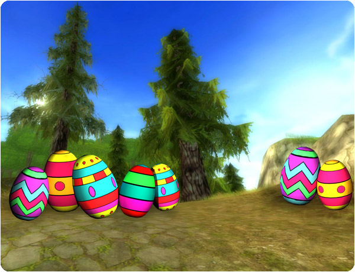
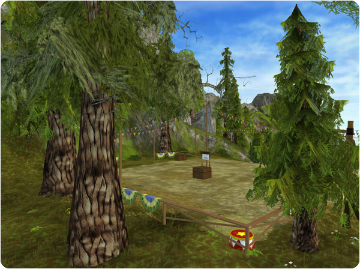

Hello everybody and happy Easter!
First of all we would like to thank you for the designs you all have sent us for the t-shirt contest. You are all so talented and you haven't made this choice easy for us! We will announce the three winners on Wednesday next week!
New Quests:
To collect Easter eggs is a yearly tradition on our beloved island. Begin with talking to Felix in Silverglade Village. The quests are hidden so in order to find them all you will need to explore Jorvik!

New Championship:
This new Championship in Firgrove is probably the most challenging and most fun Championship on Jorvik so far!

New bridles:
Loads of new bridles have arrived to Silverglade Village and Cape West Fishing Village!
The function that allows you to have more horses, will be launched in April! We will have more information soon, so make sure to keep an eye on the news!strong>
Regards: